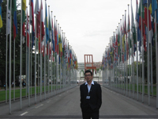

面向世界，做有担当的大国青年
江灏锋，男，政法学院2007级国际政治专业本科生。2010上海世博会吉林馆礼宾部高级主管，第十三届“外研社杯”全国英语辩论赛选拔赛暨东北师范首届英语辩论赛决赛主席，哈佛大学亚洲与国际关系学术年会校友。曾荣获世博会优秀志愿者、东北师范大学校长奖学金、一等奖学金、学有专长奖学金、社会实践奖学金、优秀学生等荣
誉称号，获北京大学2009年亚洲国际模拟联合国大会“最佳代表奖”，中国人民大学2009年全球气候变化青年峰会“最佳代表奖”及全球可持续发展领袖论坛中国“明日之星”成员。曾代表中国参加联合国新闻部举办的首届模拟联合国全球年会以及学生代表参加2011年中欧青年交流年会。已保送中国人民大学国际新闻传播方向研究生。
他的大学不仅是在象牙塔度过的，更是走出校门、走出国门、走向世界的一个个坚实的脚印。大学期间，从亚洲到欧洲，再到美洲。他参与大型公共外交活动十余次，到日内瓦参加了由联合国举办的模拟联合国全球年会、到哈佛参加洲际学术研讨会—哈佛亚洲与国际关系学术年会，作为学生代表参加了温总理出席的“2011中欧青年交流年活动”；获得了全球可持续发展领袖论坛“明日之星”全额奖学金、2009年亚洲国际模拟联合国大会“最佳代表奖”、2010上海世博会“优秀志愿者”等荣誉。目前，他已保送至中国人民大学新闻学院国际新闻传播方向攻读硕士研究生。
在这些经历背后深藏着他的一个理想：那就是面向世界，做一名有担当的大国青年。
小平同志曾指出：“教育要面向现代化，面向世界，面向未来”。虽然已经过去近三十年的时间，但时代越是向前发展，它的真理性体现的就愈加明显。随着国家间交往的日益密切，跨文化交流已成为大学生需要正视的又一课题时，我们这一代青年人已被时代的变迁赋予了更多、更深的含义。我们只有具有爱国主义和国际主义精神，才能在国际事务中成为为国争光的建设者和接班人，我们必须做好准备，不辜负这个时代的嘱咐，不辜负党和国家的期望，做有担当的大国青年。
有担当的大国青年首先要有扎实的基本素质。作为国际政治专业的学生，他苦学英语和专业知识。英语作为全球通行最广的语言，是打开我们与世界沟通的重要钥匙。为了更好地学好英语，以更有效的方式沟通中国与世界，他积极从听、说、读、写、悟等各个方面全面提升英语素养，他通过上网、订购期刊等方式定期查阅数近五十种外文资料。每一次出国，他带回来的不是手表、服装等物品。而是省吃俭用的积蓄所买来的英语原版书籍。在专业学习上，他不仅在平时学习中夯实专业基础，更会积极利用各种机会与国际关系领域的外交官甚至国际国内的著名学者积极探讨、增加见识、获得反馈，不断创新专业学习的思维模式，思学结合，坚定地抒写自己的人生。
有担当的大国青年需要坚定的政治立场。让他记忆犹新的是2009年8月，来自全球57个国家的500多名青年代表齐聚日内瓦，参加联合国举办的模拟联合国全球年会。“外交无小事”。与会进程中，某个东南亚国家的代表提出应该让台湾成为此次会议的正式代表国。虽然那是一次模拟联合国活动，并不是由正式外交官出席的，但这关系到我们的原则立场，而他必须坚持立场。他在第一时间地打开了自己的讲话器，对这个动议提出了反对意见：“台湾不具有主权属性，不具备加入只有主权国家才能加入的联合国的资格，我们需要对联合国的主权精神进行全程模拟”。最后他的意见得到了大部分与会国代表的赞同，而那个无理动议被压倒性的否决。这次经历使他深刻感受到，我们已成为面向世界的中国青年，我们需要有爱国主义精神，拥护国家主权和领土完整的政治素质，在国际事务中能够为国争光，而这种使命就发生在我们的身边！
有担当的大国青年要关心国家发展。作为一名当代大学生，关心国家发展不是做一个旁观者，更主要的是找到合适的方式参与其中，尤其是在外交、外事工作中展示中国新一代青年的形象。2010年的上海世博会给予了他这样的机会。经过严格选拔，他光荣地成为了世博会的工作人员，作为礼宾部高级主管负责吉林馆的对外联系及馆际交流事宜。在正直夏季的世博工作期间，他并没有被地面接近50摄氏度的高温及繁重的世博工作所击倒，每天都以最饱满的精神态度完成世博各项工作，因为他知道他代表的不光是自己，更是中国的形象。在世博期间他接待了很多外国游客，其中在接待法国的一批游客时，最明显的一个感受就是，他们来参观之前对中国的认识较为片面，认为中国不开放，他们主观上并不愿意把中国当成朋友。而他在与法国游客接触的过程中，始终保持着礼貌的态度，做到“有礼”，同时也会给他们讲述真实的中国，中国所取得的成就及相应的问题，做到“真实有理”。在有序组织、解说、共同游览参观的过程中，不卑不亢地向他们传达中国人民的友好和热情。有一位法国朋友之后讲；“你让我重新认识了中国。这里是一个有气度的国家，人民友好，自由而有序”。世博结束之时，他的汗水中也夹杂着泪水，因为在这个舞台他亲身体会到了个人之于国家的意义——那便是热爱与奉献。
有担当的大国青年还要关注世界动向。对于我们而言，关注世界更多的关注中国与世界的互动，做一个有国际主义精神的大国青年，胸怀天下而心系祖国。在他的国际交往中，他也总是以此标准严格要求自己。在参加哈佛大学一次研讨会之余，他参与了由纽约州长负责亚太事务助理胡思源先生组织的海地慈善捐款系列活动，向海底地震灾区捐款，并积极参与筹划了新闻发布会工作，尽管个人在其中的力量十分有限，但是他是来自四川地震灾区的学生，他忘不了在四川汶川大地震中，国内外给予我们四川同胞的无私援助，一方有难八方支援，海地发生大地震时，我们也应该表示出我们对于他们的关心与支持。他想这也是国际主义精神的应有之义，事后这一举动获得了当地美国民众及华人华侨的广泛好评，也被中国新闻网、侨报等多家媒体报道，而中国与世界不正是需要多一些这样的良性互动吗？
而他即将离开培养他四年的母校—东北师范大学。回望他在东师的四年，他的大国青年理想在这里生根、发芽与开花。这一切源于母校的悉心教育与培养，在这里有领导的关怀、老师们的栽培以及同学们的帮助，师大这片沃土给予了他放眼看世界的机会与舞台。他是当代青年，更是东师青年。此刻，新的征程即将开始，他将带着母校赐予我的理想，朝着未来的成才人生不断奋斗，成为让学校骄傲的大国青年。
他的大学不仅是在象牙塔度过的，更是走出校门、走出国门、走向世界的一个个坚实的脚印。大学期间，从亚洲到欧洲，再到美洲。他参与大型公共外交活动十余次，到日内瓦参加了由联合国举办的模拟联合国全球年会、到哈佛参加洲际学术研讨会—哈佛亚洲与国际关系学术年会，作为学生代表参加了温总理出席的“2011中欧青年交流年活动”；获得了全球可持续发展领袖论坛“明日之星”全额奖学金、2009年亚洲国际模拟联合国大会“最佳代表奖”、2010上海世博会“优秀志愿者”等荣誉。目前，他已保送至中国人民大学新闻学院国际新闻传播方向攻读硕士研究生。
在这些经历背后深藏着他的一个理想：那就是面向世界，做一名有担当的大国青年。
小平同志曾指出：“教育要面向现代化，面向世界，面向未来”。虽然已经过去近三十年的时间，但时代越是向前发展，它的真理性体现的就愈加明显。随着国家间交往的日益密切，跨文化交流已成为大学生需要正视的又一课题时，我们这一代青年人已被时代的变迁赋予了更多、更深的含义。我们只有具有爱国主义和国际主义精神，才能在国际事务中成为为国争光的建设者和接班人，我们必须做好准备，不辜负这个时代的嘱咐，不辜负党和国家的期望，做有担当的大国青年。
有担当的大国青年首先要有扎实的基本素质。作为国际政治专业的学生，他苦学英语和专业知识。英语作为全球通行最广的语言，是打开我们与世界沟通的重要钥匙。为了更好地学好英语，以更有效的方式沟通中国与世界，他积极从听、说、读、写、悟等各个方面全面提升英语素养，他通过上网、订购期刊等方式定期查阅数近五十种外文资料。每一次出国，他带回来的不是手表、服装等物品。而是省吃俭用的积蓄所买来的英语原版书籍。在专业学习上，他不仅在平时学习中夯实专业基础，更会积极利用各种机会与国际关系领域的外交官甚至国际国内的著名学者积极探讨、增加见识、获得反馈，不断创新专业学习的思维模式，思学结合，坚定地抒写自己的人生。
有担当的大国青年需要坚定的政治立场。让他记忆犹新的是2009年8月，来自全球57个国家的500多名青年代表齐聚日内瓦，参加联合国举办的模拟联合国全球年会。“外交无小事”。与会进程中，某个东南亚国家的代表提出应该让台湾成为此次会议的正式代表国。虽然那是一次模拟联合国活动，并不是由正式外交官出席的，但这关系到我们的原则立场，而他必须坚持立场。他在第一时间地打开了自己的讲话器，对这个动议提出了反对意见：“台湾不具有主权属性，不具备加入只有主权国家才能加入的联合国的资格，我们需要对联合国的主权精神进行全程模拟”。最后他的意见得到了大部分与会国代表的赞同，而那个无理动议被压倒性的否决。这次经历使他深刻感受到，我们已成为面向世界的中国青年，我们需要有爱国主义精神，拥护国家主权和领土完整的政治素质，在国际事务中能够为国争光，而这种使命就发生在我们的身边！
有担当的大国青年要关心国家发展。作为一名当代大学生，关心国家发展不是做一个旁观者，更主要的是找到合适的方式参与其中，尤其是在外交、外事工作中展示中国新一代青年的形象。2010年的上海世博会给予了他这样的机会。经过严格选拔，他光荣地成为了世博会的工作人员，作为礼宾部高级主管负责吉林馆的对外联系及馆际交流事宜。在正直夏季的世博工作期间，他并没有被地面接近50摄氏度的高温及繁重的世博工作所击倒，每天都以最饱满的精神态度完成世博各项工作，因为他知道他代表的不光是自己，更是中国的形象。在世博期间他接待了很多外国游客，其中在接待法国的一批游客时，最明显的一个感受就是，他们来参观之前对中国的认识较为片面，认为中国不开放，他们主观上并不愿意把中国当成朋友。而他在与法国游客接触的过程中，始终保持着礼貌的态度，做到“有礼”，同时也会给他们讲述真实的中国，中国所取得的成就及相应的问题，做到“真实有理”。在有序组织、解说、共同游览参观的过程中，不卑不亢地向他们传达中国人民的友好和热情。有一位法国朋友之后讲；“你让我重新认识了中国。这里是一个有气度的国家，人民友好，自由而有序”。世博结束之时，他的汗水中也夹杂着泪水，因为在这个舞台他亲身体会到了个人之于国家的意义——那便是热爱与奉献。
有担当的大国青年还要关注世界动向。对于我们而言，关注世界更多的关注中国与世界的互动，做一个有国际主义精神的大国青年，胸怀天下而心系祖国。在他的国际交往中，他也总是以此标准严格要求自己。在参加哈佛大学一次研讨会之余，他参与了由纽约州长负责亚太事务助理胡思源先生组织的海地慈善捐款系列活动，向海底地震灾区捐款，并积极参与筹划了新闻发布会工作，尽管个人在其中的力量十分有限，但是他是来自四川地震灾区的学生，他忘不了在四川汶川大地震中，国内外给予我们四川同胞的无私援助，一方有难八方支援，海地发生大地震时，我们也应该表示出我们对于他们的关心与支持。他想这也是国际主义精神的应有之义，事后这一举动获得了当地美国民众及华人华侨的广泛好评，也被中国新闻网、侨报等多家媒体报道，而中国与世界不正是需要多一些这样的良性互动吗？
而他即将离开培养他四年的母校—东北师范大学。回望他在东师的四年，他的大国青年理想在这里生根、发芽与开花。这一切源于母校的悉心教育与培养，在这里有领导的关怀、老师们的栽培以及同学们的帮助，师大这片沃土给予了他放眼看世界的机会与舞台。他是当代青年，更是东师青年。此刻，新的征程即将开始，他将带着母校赐予我的理想，朝着未来的成才人生不断奋斗，成为让学校骄傲的大国青年。